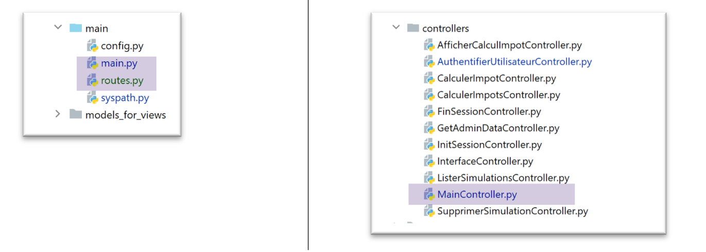
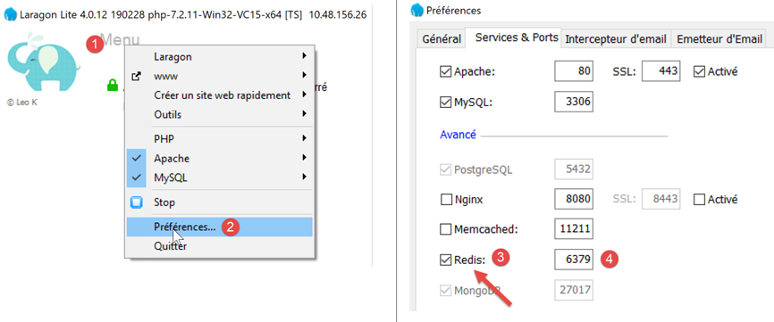
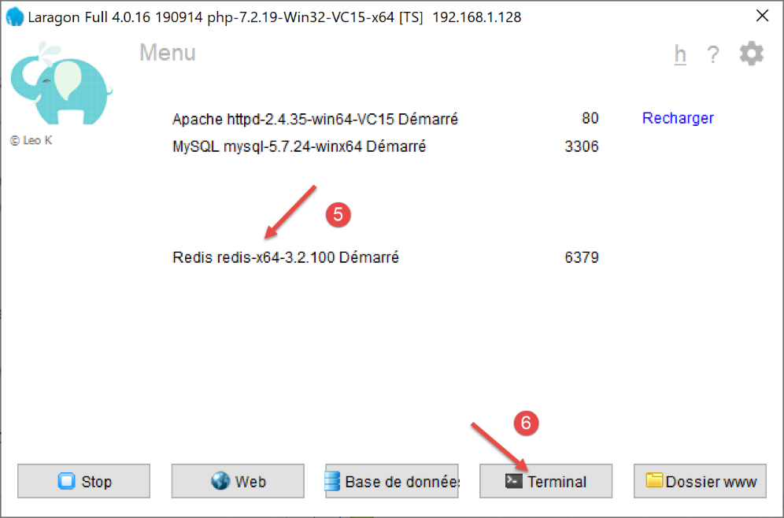
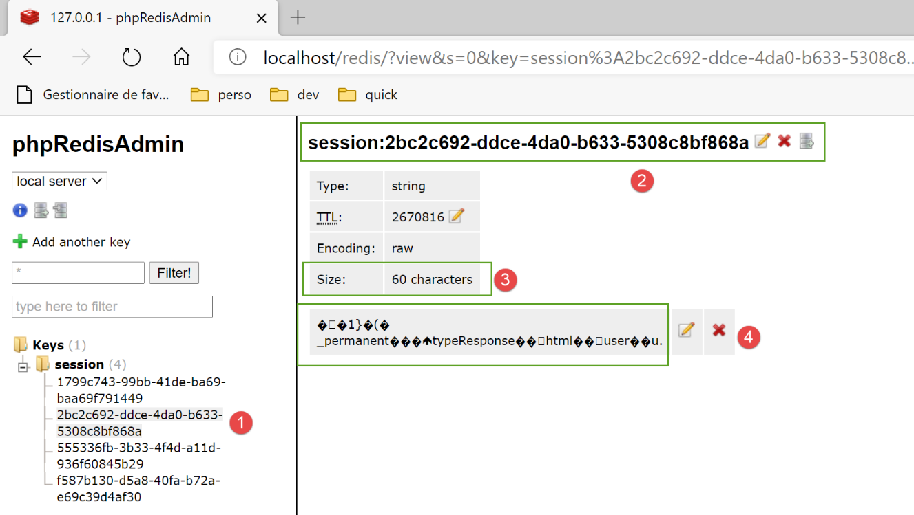

33. Esercizio pratico: versione 13
La versione 13 modifica la versione 12 nei seguenti punti:
- vengono ristrutturate alcune parti del codice (refactoring);
- la gestione della sessione viene effettuata in modo diverso tramite il modulo [flask_session];
- si utilizzano password crittografate nel file di configurazione;
La versione 13 si ottiene inizialmente copiando la versione 12:


- in [1], la configurazione verrà rifattorizzata. In particolare, verrà rimossa dalla cartella [flask];
- in [2], lo script principale verrà rifattorizzato. Verrà inoltre rimosso dalla cartella [flask];
- in [3], la configurazione verrà suddivisa in più file;
- in [4]: lo script principale [main] verrà semplificato spostando parte del codice in altri file;
- in [5], il controller di autenticazione verrà modificato poiché d'ora in poi le password degli utenti saranno crittografate;
- in [6], il controller principale integrerà il codice precedentemente presente nello script principale [main];
33.1. Rifattorizzazione della configurazione dell’applicazione

Vengono visualizzati tre nuovi file di configurazione:
- [mvc]: per configurare l'architettura MVC dell'applicazione;
- [parameters]: che raggrupperà tutte le costanti dell'applicazione;
- [syspath]: che configura il Python Path dell'applicazione;
Il file [syspath.py] è il seguente:
def configure(config: dict) -> dict:
import os
# cartella di questo file
script_dir = os.path.dirname(os.path.abspath(__file__))
# percorso radice
root_dir = "C:/Data/st-2020/dev/python/cours-2020/python3-flask-2020"
# dipendenze
absolute_dependencies = [
# cartelle del progetto
# BaseEntity, MyException
f"{root_dir}/classes/02/entities",
# InterfaceImpôtsDao, InterfaceImpôtsMétier, InterfaceImpôtsUi
f"{root_dir}/impots/v04/interfaces",
# AbstractImpôtsdao, ImpôtsConsole, ImpôtsMétier
f"{root_dir}/impots/v04/services",
# ImpotsDaoWithAdminDataInDatabase
f"{root_dir}/impots/v05/services",
# AdminData, ImpôtsError, TaxPayer
f"{root_dir}/impots/v04/entities",
# Costanti, intervalli
f"{root_dir}/impots/v05/entities",
# Logger, SendAdminMail
f"{root_dir}/impots/http-servers/02/utilities",
# cartella dello script principale
script_dir,
# configurazioni [database, layers, parameters, controllers, views]
f"{script_dir}/../configs",
# controllori
f"{script_dir}/../controllers",
# risposte HTTP
f"{script_dir}/../responses",
# modelli delle viste
f"{script_dir}/../models_for_views",
]
# si imposta il syspath
from myutils import set_syspath
set_syspath(absolute_dependencies)
# si rende la configurazione
return {
"root_dir": root_dir,
"script_dir": script_dir
}
- lo script [syspath] serve a configurare il Python Path dell’applicazione (righe 40-41);
- fornisce due informazioni utili agli altri script di configurazione (righe 45-46);
Lo script [mvc] configura l’architettura MVC dell’applicazione web jSON / XML / HTML:
def configure(config: dict) -> dict:
# configurazione dell'applicazione MVC
# i controller
from AfficherCalculImpotController import AfficherCalculImpotController
from AuthentifierUtilisateurController import AuthentifierUtilisateurController
from CalculerImpotController import CalculerImpotController
from CalculerImpotsController import CalculerImpotsController
from FinSessionController import FinSessionController
from GetAdminDataController import GetAdminDataController
from InitSessionController import InitSessionController
from ListerSimulationsController import ListerSimulationsController
from MainController import MainController
from SupprimerSimulationController import SupprimerSimulationController
# le risposte HTTP
from HtmlResponse import HtmlResponse
from JsonResponse import JsonResponse
from XmlResponse import XmlResponse
# i modelli delle viste
from ModelForAuthentificationView import ModelForAuthentificationView
from ModelForCalculImpotView import ModelForCalculImpotView
from ModelForErreursView import ModelForErreursView
from ModelForListeSimulationsView import ModelForListeSimulationsView
# azioni consentite e relativi controllori
controllers = {
# inizializzazione di una sessione di calcolo
"init-session": InitSessionController(),
# autenticazione di un utente
"authentifier-utilisateur": AuthentifierUtilisateurController(),
# calcolo dell'imposta in modalità individuale
"calculer-impot": CalculerImpotController(),
# calcolo dell'imposta in modalità batch
"calculer-impots": CalculerImpotsController(),
# elenco delle simulazioni
"lister-simulations": ListerSimulationsController(),
# eliminazione di una simulazione
"supprimer-simulation": SupprimerSimulationController(),
# fine della sessione di calcolo
"fin-session": FinSessionController(),
# visualizzazione della schermata di calcolo dell'imposta
"afficher-calcul-impot": AfficherCalculImpotController(),
# recupero dei dati dall'amministrazione fiscale
"get-admindata": GetAdminDataController(),
# controller principale
"main-controller": MainController()
}
# i diversi tipi di risposta (json, xml, html)
responses = {
"json": JsonResponse(),
"html": HtmlResponse(),
"xml": XmlResponse()
}
# le viste HTML e i relativi modelli dipendono dallo stato restituito dal controller
views = [
{
# vista di autenticazione
"états": [
700, # /init-session - operazione riuscita
201, # /autenticazione-utente - errore
],
"view_name": "views/vue-authentification.html",
"model_for_view": ModelForAuthentificationView()
},
{
# pagina di calcolo dell'imposta
"états": [
200, # /autenticare-utente completato con successo
300, # /calcolo-imposta completato con successo
301, # /calcolo-imposta fallito
800, # /visualizza-calcolo-imposta (operazione riuscita)
],
"view_name": "views/vue-calcul-impot.html",
"model_for_view": ModelForCalculImpotView()
},
{
# visualizzazione dell'elenco delle simulazioni
"états": [
500, # /elenco-simulazioni (operazione riuscita)
600, # /eliminare-simulazione (operazione riuscita)
],
"view_name": "views/vue-liste-simulations.html",
"model_for_view": ModelForListeSimulationsView()
},
]
# visualizzazione degli errori imprevisti
view_erreurs = {
"view_name": "views/vue-erreurs.html",
"model_for_view": ModelForErreursView()
}
# reindirizzamenti
redirections = [
{
"états": [
400, # /fine-sessione riuscita
],
# reindirizzamento a URL
"to": "/init-session/html",
}
]
# si ripristina la configurazione MVC
return {
# controller
"controllers": controllers,
# risposte HTTP
"responses": responses,
# viste e modelli
"views": views,
# elenco dei reindirizzamenti
"redirections": redirections,
# pagina degli errori imprevisti
"view_erreurs": view_erreurs
}
- righe 1-101: questo codice è noto;
- righe 105-116: si restituisce la configurazione MVC dell’applicazione;
Lo script [parameters] raccoglie le costanti dell'applicazione:
def configure(config: dict) -> dict:
# configurazione dell'applicazione
# script_dir
script_dir = config['syspath']['script_dir']
# configurazione dell'applicazione
parameters = {
# utenti autorizzati a utilizzare l'applicazione
"users": [
{
"login": "admin",
"password": "$pbkdf2-sha256$29000$mPM.h3COkTIGYOzde68VIg$7LH5Q7rN/1hW.Xa.6rcmR6h52PntvVqd5.na7EtgQNw"
}
],
# file di log
"logsFilename": f"{script_dir}/../data/logs/logs.txt",
# configurazione del server SMTP
"adminMail": {
# server SMTP
"smtp-server": "localhost",
# porta del server SMTP
"smtp-port": "25",
# amministratore
"from": "guest@localhost.com",
"to": "guest@localhost.com",
# oggetto dell'e-mail
"subject": "plantage du serveur de calcul d'impôts",
# TLS impostato su True se il server SMTP richiede l'autenticazione, altrimenti su False
"tls": False
},
# durata della pausa del thread in secondi
"sleep_time": 0,
# server Redis
"redis": {
"host": "127.0.0.1",
"port": 6379
},
}
# si imposta la configurazione dell'applicazione
return parameters
- riga 13: d'ora in poi le password degli utenti saranno crittografate;
- righe 34-38: la configurazione di un server [Redis] su cui torneremo;
Con questi nuovi file di configurazione, lo script [config] diventa il seguente:
def configure(config: dict) -> dict:
# configurazione del syspath
import syspath
config['syspath'] = syspath.configure(config)
# configurazione dell'applicazione
import parameters
config['parameters'] = parameters.configure(config)
# configurazione del database
import database
config["database"] = database.configure(config)
# istanziazione dei livelli dell'applicazione
import layers
config['layers'] = layers.configure(config)
# configurazione MVC del livello [web]
import mvc
config['mvc'] = mvc.configure(config)
# si restituisce la configurazione
return config
33.2. Rifattorizzazione dello script principale [main]

Lo script principale [main.py] si limita ad avviare il server:
# si attende un parametro mysql o pgres
import sys
syntaxe = f"{sys.argv[0]} mysql / pgres"
erreur = len(sys.argv) != 2
if not erreur:
sgbd = sys.argv[1].lower()
erreur = sgbd != "mysql" and sgbd != "pgres"
if erreur:
print(f"syntaxe : {syntaxe}")
sys.exit()
# si configura l'applicazione
import config
config = config.configure({'sgbd': sgbd})
# dipendenze
from SendAdminMail import SendAdminMail
from Logger import Logger
from ImpôtsError import ImpôtsError
import redis
# invio di un'e-mail all'amministratore
def send_adminmail(config: dict, message: str):
# si invia un'e-mail all'amministratore dell'applicazione
config_mail = config['parameters']['adminMail']
config_mail["logger"] = config['logger']
SendAdminMail.send(config_mail, message)
# verifica del file di log
logger = None
erreur = False
message_erreur = None
try:
# registratore
logger = Logger(config['parameters']['logsFilename'])
except BaseException as exception:
# log della console
print(f"L'erreur suivante s'est produite : {exception}")
# si registra l'errore
erreur = True
message_erreur = f"{exception}"
# si memorizza il logger nella configurazione
config['logger'] = logger
# gestione degli errori
if erreur:
# invio di un'e-mail all'amministratore
send_adminmail(config, message_erreur)
# chiusura dell'applicazione
sys.exit(1)
# log di avvio
log = "[serveur] démarrage du serveur"
logger.write(f"{log}\n")
# verifica della disponibilità del server Redis
redis_client = redis.Redis(host=config["parameters"]["redis"]["host"],
port=config["parameters"]["redis"]["port"])
# si esegue il ping del server Redis
try:
redis_client.ping()
except BaseException as exception:
# Redis non disponibile
log = f"[serveur] Le serveur Redis n'est pas disponible : {exception}"
# console
print(log)
# log
logger.write(f"{log}\n")
# fine
sys.exit(1)
# si memorizza il client [redis] nella configurazione
config['redis_client'] = redis_client
# recupero dei dati dall'amministrazione fiscale
erreur = False
try:
# admindata sarà un dato a livello di applicazione in sola lettura
config["admindata"] = config["layers"]["dao"].get_admindata()
# log di esito positivo
logger.write("[serveur] connexion à la base de données réussie\n")
except ImpôtsError as ex:
# si registra l'errore
erreur = True
# log degli errori
log = f"L'erreur suivante s'est produite : {ex}"
# console
print(log)
# file di log
logger.write(f"{log}\n")
# e-mail all'amministratore
send_adminmail(config, log)
# il thread principale non ha più bisogno del logger
logger.close()
# se si è verificato un errore, ci si arresta
if erreur:
sys.exit(2)
# importazione delle route dell'applicazione web
import routes
routes.config=config
routes.execute(__name__)
- righe 56-73: vengono introdotti un server Redis e il relativo client;
- righe 102-104: le route dell’applicazione sono state esternalizzate nello script [routes];
33.2.1. I moduli [flask_session] e [redis]
Il server [Redis] verrà utilizzato per memorizzare le sessioni degli utenti. Utilizzeremo il modulo [flask_session] per gestire tali sessioni. Questo modulo può memorizzare le sessioni degli utenti in diverse posizioni. Redis è una di queste e la utilizzeremo.
Il modulo [flask_session] deve essere installato in un terminale PyCharm:
(venv) C:\Data\st-2020\dev\python\cours-2020\python3-flask-2020\packages>pip install flask-session
Collecting flask-session
…
Per comunicare con il server Redis, abbiamo bisogno di un client Redis. Questo ci verrà fornito dal modulo [redis], che installeremo a nostra volta:
(venv) C:\Data\st-2020\dev\python\cours-2020\python3-flask-2020\packages>pip install redis
Collecting redis
…
33.2.2. Il server Redis
Il server Redis servirà a memorizzare le sessioni degli utenti. Il modulo [flask_session] funziona nel modo seguente:
- ogni utente ha un identificativo di sessione ed è proprio questo che viene inviato al client, e nient’altro. Il client riceve un cookie di sessione una sola volta, al termine della sua prima richiesta. Questo cookie contiene l’identificativo di sessione dell’utente, che non cambierà più nel corso delle successive richieste del client. Per questo motivo il server non deve inviare un nuovo cookie di sessione;
- in precedenza il contenuto della sessione veniva inviato al client. Questo non avverrà più. Il contenuto della sessione dell’utente verrà memorizzato sul server Redis;
Laragon viene fornito con un server Redis disattivato per impostazione predefinita. È quindi necessario attivarlo:

- in [3], attivare il server [Redis];
- in [4], lasciare la porta [6379] che i client Redis utilizzano di default;
I servizi Laragon vengono riavviati automaticamente dopo l’attivazione di Redis:

Il server Redis può essere interrogato in modalità comando. Si apre un terminale Laragon [6]:

- in [1], il comando [redis-cli] avvia il client in modalità comando del server Redis;
Nel luglio 2019, il client Redis può utilizzare 172 comandi per interagire con il server [https://redis.io/commands#list]. Uno di questi, [command count] [2], visualizza il numero [3].
La scrittura in [Redis] avviene tramite il comando Redis [set attribut valeur] [4]. Il valore può quindi essere recuperato con il comando [get attribut] [5].
Potrebbe essere necessario svuotare la memoria di Redis. Ciò si effettua con il comando [flushdb] [6]. Successivamente, se si richiede il valore dell’attributo [titre] [7], si ottiene un riferimento [nil] [8] che indica che l’attributo non è stato trovato. È inoltre possibile utilizzare il comando [exists] [9-10] per verificare l’esistenza di un attributo.
Per uscire dal client Redis, digitare il comando [quit] [11].
È inoltre possibile utilizzare un'interfaccia web per gestire le chiavi presenti nel server Redis. A tal fine, è necessario che il server Apache di Laragon sia in esecuzione:

Si ottiene la seguente interfaccia:

- in [1-4], una delle sessioni memorizzate sul server Redis;
33.2.3. Gestione del server Redis nello script principale [main]
Lo script [main] verifica la presenza del server Redis nel modo seguente:
import redis
…
# si verifica la disponibilità del server Redis
redis_client = redis.Redis(host=config["parameters"]["redis"]["host"],
port=config["parameters"]["redis"]["port"])
# si esegue il ping del server Redis
try:
redis_client.ping()
except BaseException as exception:
# Redis non disponibile
log = f"[serveur] Le serveur Redis n'est pas disponible : {exception}"
# console
print(log)
# log
logger.write(f"{log}\n")
# fine
sys.exit(1)
# si memorizza il client [redis] nella configurazione
config['redis_client'] = redis_client
- riga 4: il costruttore della classe [redis.Redis] crea un client del server Redis. Le sue caratteristiche (indirizzo, porta) si trovano nello script [parameters];
- riga 8: il metodo [ping] consente di verificare la presenza del server Redis;
- righe 9-17: se il ping non va a buon fine, l'errore viene registrato nel log e il server viene arrestato;
- riga 20: il riferimento del client Redis viene inserito nella configurazione;
33.2.4. Gestione delle rotte nello script principale [main]
La gestione delle rotte in [main] si limita alle seguenti righe:
# importazione delle rotte dell'applicazione web
import routes
routes.config=config
routes.execute(__name__)
- riga 1: le rotte sono state esternalizzate nel modulo [routes];
- riga 3: le route devono conoscere la configurazione di esecuzione;
- riga 4: si avvia l'applicazione Flask passandole il nome dello script eseguito (__main__);
Lo script delle route è il seguente:
# dipendenze
import os
from flask import Flask, redirect, request, session, url_for
from flask_api import status
from flask_session import Session
# Applicazione Flask
app = Flask(__name__, template_folder="../flask/templates", static_folder="../flask/static")
# configurazione dell'applicazione
config = {}
# il front controller
def front_controller() -> tuple:
# la richiesta viene inoltrata al controller principale
main_controller = config['mvc']['controllers']['main-controller']
return main_controller.execute(request, session, config)
@app.route('/', methods=['GET'])
def index() -> tuple:
# reindirizzamento a /init-session/html
return redirect(url_for("init_session", type_response="html"), status.HTTP_302_FOUND)
# init-session
@app.route('/init-session/<string:type_response>', methods=['GET'])
def init_session(type_response: str) -> tuple:
# si esegue il controller associato all'azione
return front_controller()
# autenticazione utente
@app.route('/authentifier-utilisateur', methods=['POST'])
def authentifier_utilisateur() -> tuple:
# si esegue il controller associato all'azione
return front_controller()
# calcolo-imposta
@app.route('/calculer-impot', methods=['POST'])
def calculer_impot() -> tuple:
# si esegue il controller associato all'azione
return front_controller()
# calcolo dell'imposta in batch
@app.route('/calculer-impots', methods=['POST'])
def calculer_impots():
# si esegue il controller associato all'azione
return front_controller()
# elenco delle simulazioni
@app.route('/lister-simulations', methods=['GET'])
def lister_simulations() -> tuple:
# viene eseguito il controller associato all'azione
return front_controller()
# elimina-simulazione
@app.route('/supprimer-simulation/<int:numero>', methods=['GET'])
def supprimer_simulation(numero: int) -> tuple:
# viene eseguito il controller associato all'azione
return front_controller()
# fine-sessione
@app.route('/fin-session', methods=['GET'])
def fin_session() -> tuple:
# si esegue il controller associato all'azione
return front_controller()
# visualizza-calcolo-imposta
@app.route('/afficher-calcul-impot', methods=['GET'])
def afficher_calcul_impot() -> tuple:
# si esegue il controller associato all'azione
return front_controller()
# get-admindata
@app.route('/get-admindata', methods=['GET'])
def get_admindata() -> tuple:
# viene eseguito il controller associato all'azione
return front_controller()
def execute(name: str):
# chiave segreta della sessione
app.secret_key = os.urandom(12).hex()
# Flask-Session
app.config.update(SESSION_TYPE='redis',
SESSION_REDIS=config['redis_client'])
Session(app)
# caso in cui l'applicazione Flask viene avviata tramite uno script da riga di comando
if name == '__main__':
app.config.update(ENV="development", DEBUG=True)
app.run(threaded=True)
- riga 9: l'applicazione Flask viene istanziata;
- riga 12: la configurazione dell'applicazione non è ancora nota al momento della scrittura dello script. Diventa nota solo al momento della sua esecuzione;
- righe 20-77: le route dell’applicazione così come erano definite nella versione precedente. Non cambiano;
- righe 14-18: tutte le route si limitano a chiamare la funzione [front_controller]. Abbiamo eliminato da quest’ultima il codice iniziale. Ora si limita a chiamare il controller principale dell’applicazione web;
- righe 79-89: [execute] è la funzione chiamata dallo script [main] per avviare l’applicazione web;
- riga 81: il modulo [flask_session] utilizza la chiave segreta di Flask;
- righe 82-84: configurazione del modulo [flask_session]. Consiste nell’aggiungere le chiavi [SESSION_TYPE, SESSION_REDIS] alla configurazione [app.config] dell’applicazione Flask [app]:
- [SESSION_TYPE]: il tipo di sessione. Ne esistono diversi. Il tipo [redis] indica che [flask_session] utilizza un server [redis] per memorizzare le sessioni degli utenti. Per questo motivo, è necessario definire la chiave [SESSION_REDIS], che deve essere il riferimento di un client Redis;
- riga 85: la sessione [Flask-Session] è associata all’applicazione Flask;
- righe 86-89: se il parametro [name] della riga 79 è la stringa [__main__], allora l’applicazione Flask viene avviata;
33.3. Rifattorizzazione del controller principale
Il codice che in precedenza si trovava nella funzione [front_controller] dello script [main] è stato spostato nel controller principale:

# importazione delle dipendenze
import threading
import time
from random import randint
from flask_api import status
from werkzeug.local import LocalProxy
from InterfaceController import InterfaceController
from Logger import Logger
from SendAdminMail import SendAdminMail
def send_adminmail(config: dict, message: str):
# invio di un'e-mail all'amministratore dell'applicazione
config_mail = config['parameters']['adminMail']
config_mail["logger"] = config['logger']
SendAdminMail.send(config_mail, message)
# controller principale dell'applicazione
class MainController(InterfaceController):
def execute(self, request: LocalProxy, session: LocalProxy, config: dict) -> (dict, int):
# elaborazione della richiesta
logger = None
action = None
type_response1 = None
try:
# si recuperano gli elementi del percorso
params = request.path.split('/')
# l'azione è il primo elemento
action = params[1]
# nessun errore iniziale
erreur = False
# il tipo di sessione deve essere noto prima di determinate azioni
type_response1 = session.get('typeResponse')
if type_response1 is None and action != "init-session":
# si registra l'errore
résultat = {"action": action, "état": 101,
"réponse": ["pas de session en cours. Commencer par action [init-session]"]}
erreur = True
# registrare nel log
logger = Logger(config['parameters']['logsFilename'])
# viene memorizzato in una configurazione associata al thread
thread_config = {"logger": logger}
thread_name = threading.current_thread().name
config[thread_name] = {"config": thread_config}
# si registra la richiesta
logger.write(f"[MainController] requête : {request}\n")
# si interrompe il thread se richiesto
sleep_time = config['parameters']['sleep_time']
if sleep_time != 0:
# la pausa è casuale, in modo che alcuni thread vengano interrotti e altri no
aléa = randint(0, 1)
if aléa == 1:
# registrazione prima della pausa
logger.write(f"[front_controller] mis en pause du thread pendant {sleep_time} seconde(s)\n")
# pausa
time.sleep(sleep_time)
# per alcune azioni è necessario essere autenticati
user = session.get('user')
if not erreur and user is None and action not in ["init-session", "authentifier-utilisateur"]:
# si rileva l'errore
résultat = {"action": action, "état": 101,
"réponse": [f"action [{action}] demandée par utilisateur non authentifié"]}
erreur = True
# Ci sono errori?
if erreur:
# la richiesta non è valida
status_code = status.HTTP_400_BAD_REQUEST
else:
# viene eseguito il controller associato all'azione
controller = config['mvc']['controllers'][action]
résultat, status_code = controller.execute(request, session, config)
except BaseException as exception:
# altre eccezioni (impreviste)
résultat = {"action": action, "état": 131, "réponse": [f"{exception}"]}
status_code = status.HTTP_400_BAD_REQUEST
finally:
pass
# si registra il risultato inviato al cliente
log = f"[MainController] {résultat}\n"
logger.write(log)
# Si è verificato un errore irreversibile?
if status_code == status.HTTP_500_INTERNAL_SERVER_ERROR:
# viene inviata un'e-mail all'amministratore dell'applicazione
send_adminmail(config, log)
# si determina il tipo desiderato per la risposta
type_response2 = session.get('typeResponse')
if type_response2 is None and type_response1 is None:
# il tipo di sessione non è ancora stato stabilito - sarà jSON
type_response = 'json'
elif type_response2 is not None:
# il tipo di risposta è noto e presente nella sessione
type_response = type_response2
else:
# altrimenti si continua a utilizzare type_response1
type_response = type_response1
# si costruisce la risposta da inviare
response_builder = config['mvc']['responses'][type_response]
response, status_code = response_builder \
.build_http_response(request, session, config, status_code, résultat)
# si chiude il file di log se era stato aperto
if logger:
logger.close()
# si invia la risposta HTTP
return response, status_code
Tutto questo codice è già stato visto in un momento o nell’altro.
33.4. Gestione delle password crittografate
Per gestire le password crittografate utilizzeremo il modulo [passlib], che si installa da un terminale PyCharm:
(venv) C:\Data\st-2020\dev\python\cours-2020\python3-flask-2020\packages>pip install passlib
Collecting passlib
…
Ecco un esempio di script che crittografa la password che gli viene passata come parametro:

Lo script [create_hashed_password] è il seguente (https://passlib.readthedocs.io/en/stable/):
import sys
# funzione di crittografia
from passlib.hash import pbkdf2_sha256
# si attende la password da crittografare
syntaxe = f"{sys.argv[0]} password"
erreur = len(sys.argv) != 2
if erreur:
print(f"syntaxe : {syntaxe}")
sys.exit()
else:
password = sys.argv[1]
# si crittografa la password
hash = pbkdf2_sha256.hash(password)
print(f"version cryptée de [{password}] = {hash}")
# verifica
correct = pbkdf2_sha256.verify(password, hash)
print(correct)
- riga 16: si crittografa la password passata come parametro;
- riga 20: si confronta la password [password] passata come parametro con la sua versione crittografata [hash]. La funzione [verify] crittografa la password [password] e confronta la stringa crittografata ottenuta con [hash]. Restituisce True se le due stringhe sono uguali;
Lo script sopra riportato ci permette di ottenere la versione crittografata della password [admin]:
C:\Data\st-2020\dev\python\cours-2020\python3-flask-2020\venv\Scripts\python.exe C:/Data/st-2020/dev/python/cours-2020/python3-flask-2020/impots/http-servers/08/passlib/create_hashed_password.py admin
version cryptée de [admin] = $pbkdf2-sha256$29000$fU9pTendO6c0ZoyR8r5Xqg$5ZXywIUnbMfN2hPnBaefiuqWjEbmAY.Lu06i4dwcnek
True
Riga 2, il valore che inseriamo nello script [parameters]:
"users": [
{
"login": "admin",
"password": "$pbkdf2-sha256$29000$fU9pTendO6c0ZoyR8r5Xqg$5ZXywIUnbMfN2hPnBaefiuqWjEbmAY.Lu06i4dwcnek"
}
],
Il controller di autenticazione [AuthentifierUtilisateurController] si evolve come segue:
from passlib.handlers.pbkdf2 import pbkdf2_sha256
…
# si verifica la validità della coppia (utente, password)
users = config['parameters']['users']
i = 0
nbusers = len(users)
trouvé = False
while not trouvé and i < nbusers:
trouvé = user == users[i]["login"] and pbkdf2_sha256.verify(password, users[i]["password"])
i += 1
# Trovata?
if not trouvé:
…
33.5. Test
Oltre ai test con un browser, è possibile utilizzare anche i client presenti nella cartella [http-servers/07] scritti per la versione 12. Dovrebbero funzionare anche per la versione 13:

- in [1], i tre client devono funzionare;
- in [2], i due test dovrebbero funzionare;